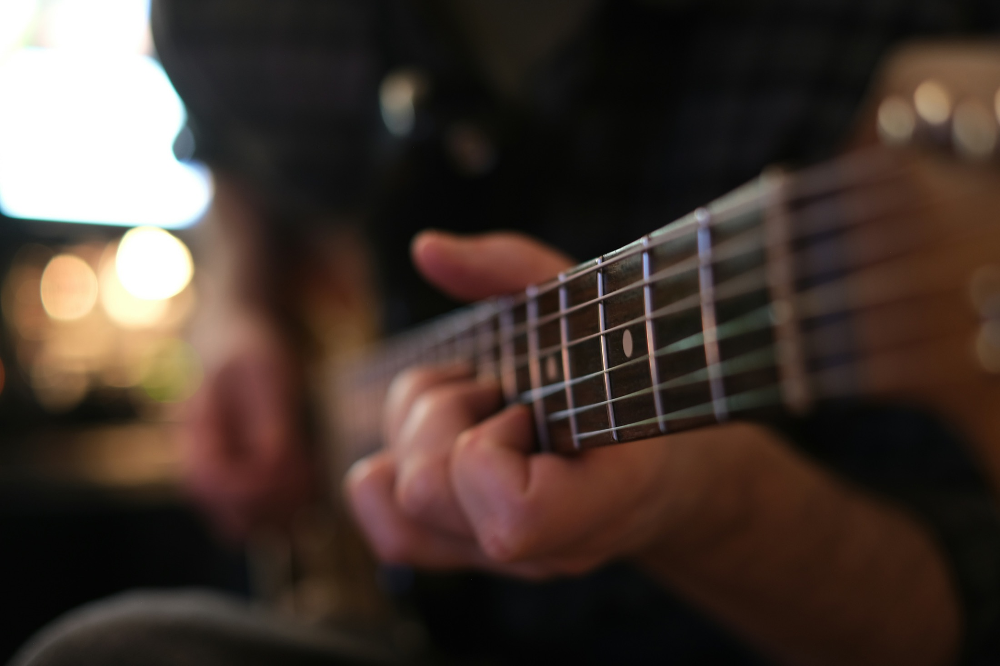
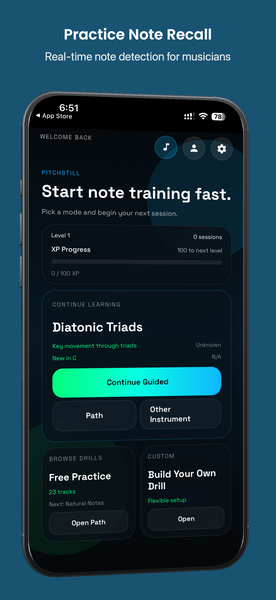

Single-note drills
Choose the notes you want, set the fret range, and run short scored sessions.
PitchStill helps guitarists turn fretboard knowledge into recall. Set strings, frets, and note pools, then play target notes on your real guitar while the app listens through the mic.


CAGED, pentatonics, triads, and scale boxes are useful maps. The plateau happens when the map does not turn into fast target-note recall under your fingers.
PitchStill drills that exact gap: it asks for a note first, then checks whether you can find and hold it cleanly on guitar.
Choose the notes you want, set the fret range, and run short scored sessions.
Build the reflex of finding roots, thirds, fifths, sevenths, and color tones.
Premium adds inversions, scale patterns, guided harmonic paths, and chord movement.
Hear the target, find it on the fretboard, hold it cleanly, and review your accuracy, streak, reaction time, score, XP, and session history.

Yes. Guitar drills can be narrowed so you work the exact fretboard area that needs attention.
No. A tuner identifies what you played. PitchStill gives you the target first and checks whether you can find it.
No. Use it next to real playing. It isolates note recall so songs and improvisation feel less like guessing.
Yes. Premium unlocks guided harmonic paths, chord movement, inversions, and sequence drills.
Download PitchStill on iPhone, iPad, or Android.